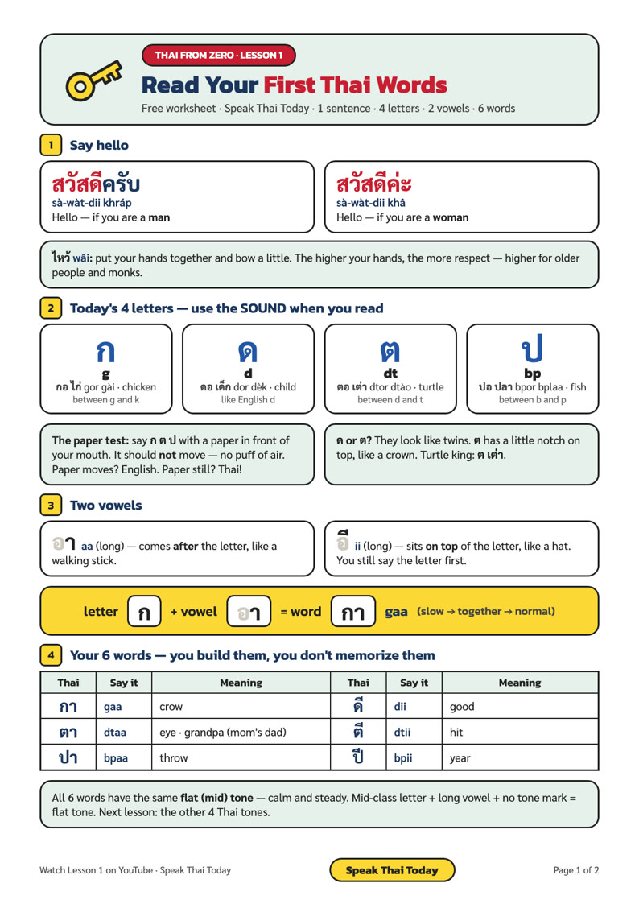

สวัสดีครับ
sà-wàt-dii kráp
Hands together, small bow — that's a ไหว้ (wâi).
Thai writing isn't impossible — it's a code. Learn 4 letters and 2 vowels, blend them, and read this sign out loud: กา ตา ดี.
Women end with ค่ะ (kâ), men end with ครับ (kráp). It depends on who is speaking.
Hands together, small bow — that's a ไหว้ (wâi).
The higher your hands, the more respect — higher for older people and monks.
Every letter has a name and a sound. When you read, you only use the sound.
า (aa, long) comes after the letter, like a walking stick. ี (ii, long) sits on top, like a hat — but you still say the letter first.
| Thai | Say it | Meaning |
|---|---|---|
| กา | gaa | crow |
| ตา | dtaa | eye |
| ดี | dii | good |
| ปี | bpii | year |
| ตี | dtii | hit |
| ปา | bpaa | throw |

🎁 Also free: the Thai Alphabet Cheat Sheet — all 44 consonants, vowels and tones on 2 pages.
Say your answer out loud, then tap to check.
ตา (dtaa) — eye
ปี (bpii) — year
ต (dt) — the turtle king, ต เต่า
สวัสดีค่ะ (sà-wàt-dii kâ)
gaa · dtaa · dii — you just read your first Thai words!
💬 Comment challenge: blend a word you learned today and write it in Thai under the YouTube video!
Real Thai for travelers & expats, with a native Thai teacher — every lesson comes with a free worksheet.